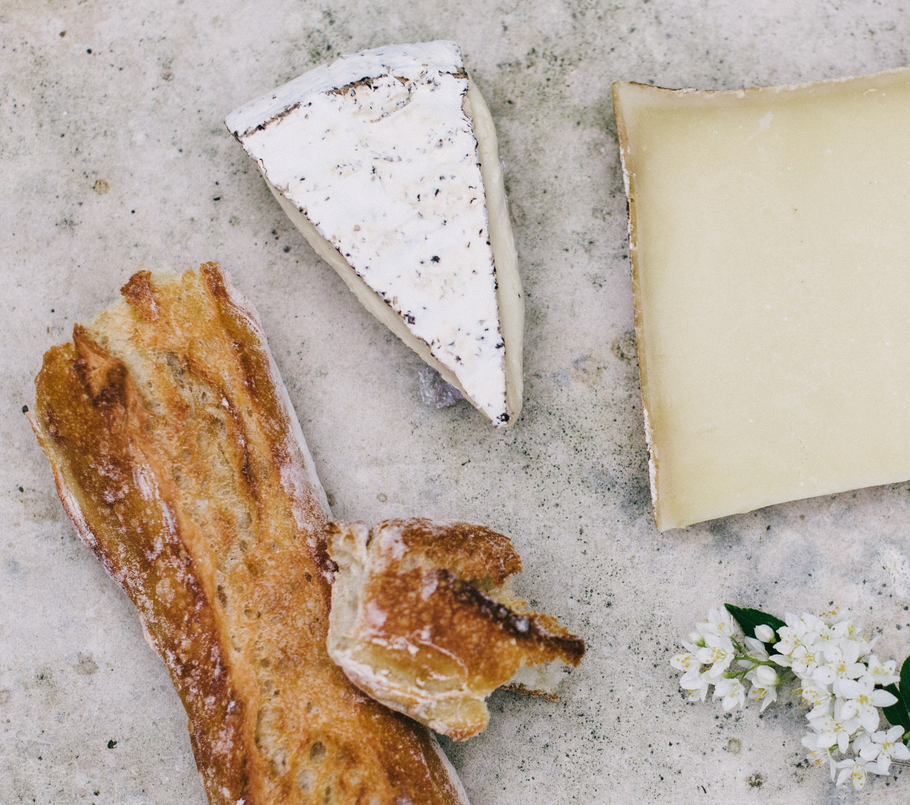
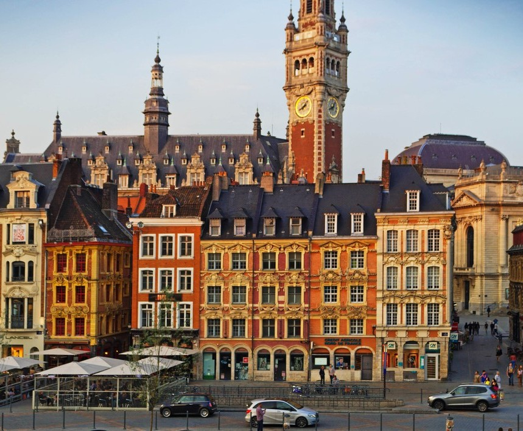

From Polish Perogi to Italian pizzas and all the way to German bratwurst, Europe hosts some of
the most iconic (and delicious) dishes in the world. But which city is the best? To help you choose the ultimate
foodie dream destination, we’ve ranked the best European culinary cities based on numerous ranking factors.
CITY, COUNTRY
RESTAURANT PRICE INDEX
WINE PRICE
BEER PRICE
CUISINE RANKING
MICHELIN STARS
INDEX
RANKING
Lille, France
64.28
3.44
1.29
2
613
0
0
Lyon, France
72.80
5.60
1.35
2
613
0
0
Toulouse, France
72.88
5.17
1.36
2
613
0
0
Montpellier, France
72.64
5.17
1.55
2
613
0
0
Paris, France
86.37
6.89
1.5
2
613
0
0
Naples, Italy
54.95
4.30
1.17
1
364
0
0
Aachen, Germany
48.97
4.30
0.7
5
304
0
0
Leipzig, Germany
55.92
4.30
0.66
5
304
0
0
Berlin, Germany
56.04
4.30
0.71
5
304
0
0
Dresden, Germany
56.40
4.30
0.7
5
304
0
0

LILLE, FRANCE TAKES THE TOP SPOT AS THE FOOD CAPITAL OF EUROPE
Often said to be France’s most underrated city, the northern Capital of Lille boasts a
vibrant
cultural
scene, including the largest outdoor flea market in Europe. Lille now also comes out on top for dining out. Time
to
book some flights!

SUMMARY OF RESEARCH
The index is comprised of 171 cities, using weighted metrics of Michelin stars per area,
restaurant price,
how popular the cuisine is and the cost of drinks. France has taken the top 5 spots, with the country holding a
whopping 613 Michelin stars. Liverpool is rated the food capital of the UK, ranked 104th, followed by
Cardiff,
ranked 106th out of 171 cities.
Sources
To calculate the index we first normalised the data categories individually from 0 to 1 and then summed the
results.
On this scale, for